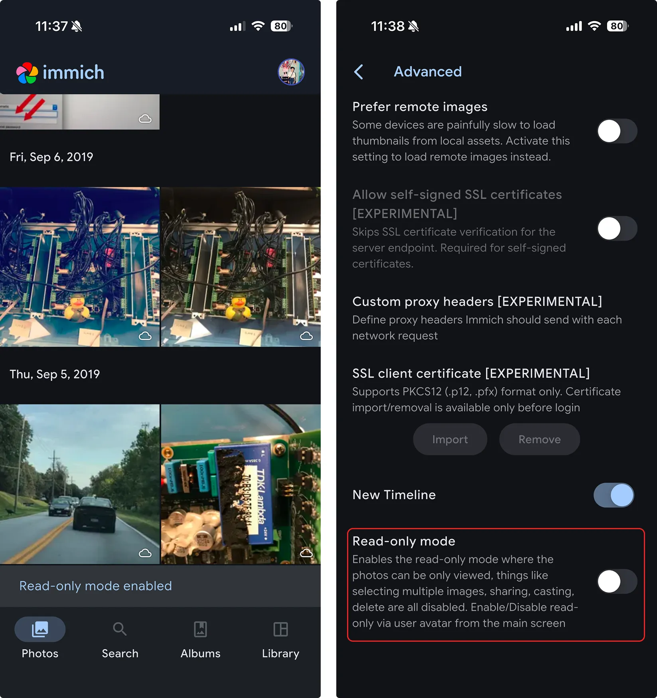
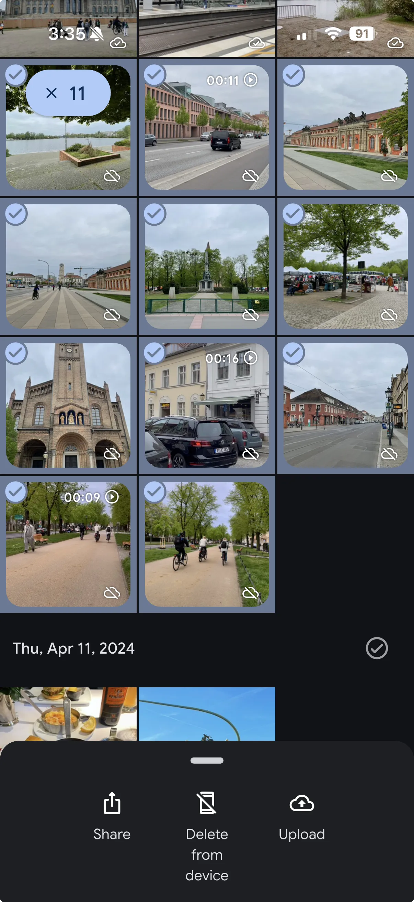
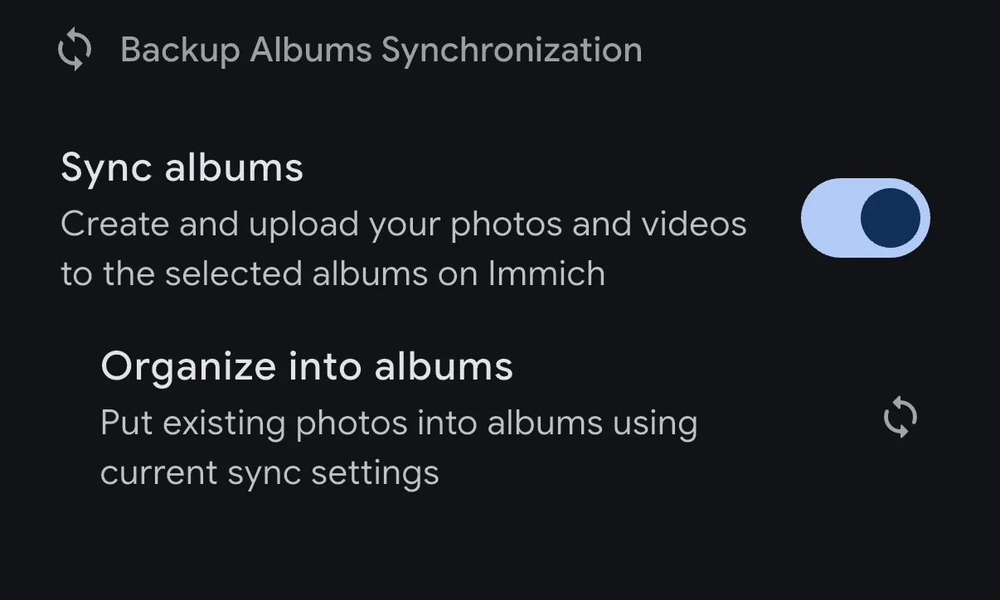

Immich 藏得真深：五个大多数人不知道还能这样用的功能
你以为 Immich 只是个自托管相册备份工具？其实它还藏着只读模式、手动选择上传、相册同步回填、释放空间四道闸门，以及 4GB 内存降级路径——五个冷门但关键时刻救场的技巧。
你以为 Immich官网 上宣传的就是它的全部？搭好服务器、开个自动备份，然后就放着不管了？
我之前也是这么想的——直到把设置菜单翻了个底朝天，才发现它藏着一堆官方没怎么宣传、但用起来能大幅改善体验的功能。有些是给特殊场景准备的，有些是给低配机器留的后门，还有几个是设计得太隐蔽以至于默认你不会注意到。
长按头像出来的只读模式
先不说功能本身，光是开启方式就够冷门的：长按时间线右上角的个人头像图标。没错，就是长按，多点几秒，App 会弹出一个开关叫「Read-only Mode（只读模式）」。设置 → Advanced（高级）里也有，但谁会没事翻高级设置？
这个模式把 App 锁成「只能看」：时间线浏览、搜索、回忆都正常，但删除、移动等破坏性操作被禁用。官方的设计场景很具体——防止家人（尤其小孩）在你手机上随手把照片删了。
我把自己的旧手机装了 Immich 给我妈看照片，开只读模式之后就不用担心她清理空间时把历史相册给删干净了。注意一点：只读模式保护的是这台手机上的本地文件不被误删，服务器上的照片管理（比如我在网页端删照片）不受它约束。所以如果有多端同步，服务器端的权限还是要管好。

存储指示器配合手动上传，告别全量备份的强制
Immich 默认是「整个相册一锅端」自动备份——但不是每个人都想把手机里 20 万张照片全部传上去。有人只关心旅行和孩子的照片，有人手机里还存着一堆聊天截图和临时工作文件。
解决办法藏在两个开关里：
第一个，设置 → Photo Grid（照片网格）→ 开启「Show Storage indicator on asset tiles（在缩略图上显示存储指示）」。之后每张照片的右下角会出现小云朵图标：有云朵 = 已同步到服务器；无云朵 = 仅存本机。这样你在相册里一眼就能看出哪些传了哪些没传。
第二个，进入备份页，把包含目标照片的本地相册勾上——这一步只是建立「服务器能接收这些照片」的通道，不会立刻触发上传。然后回到时间线或该相册，长按进入多选，挑出想传的照片，点底部操作栏的上传按钮，选中的照片立即上传，其余照片保持本地不动。
这个模式配合释放空间要格外谨慎——释放空间的扫描范围跟随备份配置，全量备份关着时它不会误删，但保留闸门值得再核一遍。

相册同步：单向镜像 + 存量回填的隐形服务
默认情况下，备份到服务器的照片是「一锅端」进时间线的，手机上「相机」「微信」「截图」的相册结构不会跟过来。相册同步（Album Sync） 就是补齐这一层的服务——开启后，服务器上会自动创建与你手机相册同名的相册，照片上传后自动归入。
开启方式很简单，在备份设置里打开就行。但有两个细节大多数人不知道：
第一，它对开启之后新上传的照片自动生效；开启之前已经传上去的照片也不会被落下——备份页里有个 Reorganize into album（重新归入相册） 按钮，点一下就会把存量上传按原相册结构回填一遍。我第一次用的时候，之前已经传了上千张照片，点了这个按钮之后等了十来分钟，服务器端的相册结构就和手机上一模一样了——后来去Immich文档翻了一下才确认这个按钮就是干存量回填的。
第二，它是单向同步。方向永远是「手机 → 服务器」。你在服务器网页端往同步相册里加照片、调整顺序，不会反向影响手机；反过来，手机上删掉某张照片、把照片移出相册，服务器上的相册也不会跟着删或跟——首次建相册时的成员构成就是基线，之后只反映「新增」。这个设计是为了防止误删扩散，但也意味着「手机上整理相册」对服务器无效，整理动作要去服务器端做。

释放空间的四道筛选闸门，不是无脑全删
释放空间（Free Up Space）是 Immich 取代早年各种社区方案的官方功能，v2.5.0 才加入。很多人知道它能清理手机上已备份的照片，但不知道它不是无脑全删——App 提供四道可叠加的筛选闸门：
- 截止日期：只清理这个日期当天及以前的照片视频——留出最近一段的本地副本，防止「刚拍的还没被服务器处理完」的边缘情况；
- 保留收藏：标记过收藏的本地文件不动；
- 保留相册：勾选的相册一律保留在本机。默认勾选了 WhatsApp 相关相册；
- 始终保留：可以强制「所有照片」或「所有视频」永不清理。
配置好闸门后，App 先扫描并列出「将被删除」的清单和可回收的空间总量，你审阅确认后才执行删除。删除的动作是把文件移入系统相册/回收站，不是直接粉碎——大批量时按批次处理（安卓每批 2000 个、iOS 每批 10000 个）以保证稳定。想让空间立即可用，还需要手动清空系统回收站——这一步在 Immich 之外，别找了。
低配机器的 4GB 内存降级路径
这个是给还在犹豫要不要上 Immich 的人看的——安装包从下载拿就行，官方最低配置写的是 6GB 内存起步，但只有 4GB 内存的机器也能跑。
办法是在管理后台关闭机器学习功能——关掉之后语义搜索和人脸识别不可用，只剩基础的时间线浏览和备份。这不是理想形态，但作为一个降级路径确实值得知道。一台老笔记本或迷你主机配上外接硬盘，4GB 内存 + 关闭机器学习，足够一个四口之家从零用起。
另外，从 v3 起，机器学习容器在 amd64 上要求 CPU 支持 x86-64-v2 指令集——大约 2012 年以后的主流 CPU 都满足。极老的机器最高只能用到 v2.7.5 版本。
两个别踩的坑
聊了这么多好用的功能，有两个高危场景必须单独拎出来说：
iCloud 用户碰释放空间要格外小心。 iCloud 相册是双向同步——你在 iPhone 上删掉的照片，会同步删掉 iCloud 和所有登录同一 Apple 账号设备上的同一张。释放空间之后，那张照片的存亡就完全系于你的 Immich 服务器（和 iPhone 的「最近删除」30 天）。官方给双备份用户的建议是改用 iCloud 的「优化 iPhone 存储空间」模式，而不是对 iCloud 库做释放空间。
微信/WhatsApp 用户别碰聊天相册的释放空间。 聊天记录里的图片依赖本地文件显示。如果备份了微信相册又执行了释放空间，聊天里的图片会变成模糊占位或消失，只能去 Immich 里看。所以默认保留 WhatsApp 相册；用微信同理——要么保留，要么从一开始就别备份这类相册。
写在最后
Immich 的功能密度其实很高，只是默认开启的那条主路径太清晰了——「搭服务器 → 开自动备份 → 放着不管」，以至于很多人用了一年都没碰过那些藏起来的设置。我现在的日常节奏是：手机自动后台备份 → 每两周手动选一批照片细调归类 → 每月跑一次释放空间清手机。把它用透，手机存储焦虑就真的解放了。顺手提一句，这份整理用到的资料在 GitHub、Gitee、GitCode 三个仓库都能拿到，国内访问选哪个顺手就用哪个。